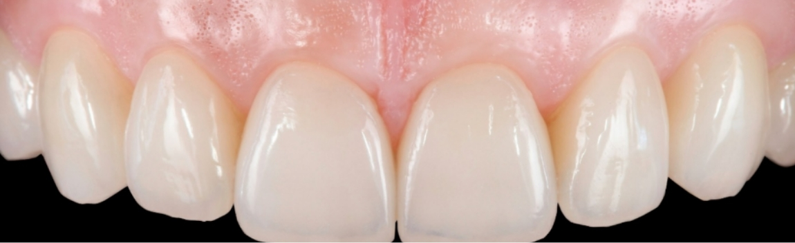
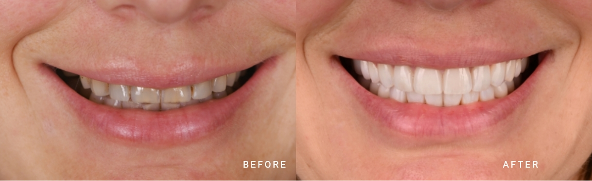

Both Prof. Dr. Wael Att (DDS, Dr Med Dent, DMD, PhD) and Dr. James Katib (DMD) are leaders in their field. Dr. Att has been recognized for his exceptional work across the globe. With over 150 publications, own textbook and three DMD degrees with multispecialty training in periodontics, prosthodontics, and oral surgery. Dr. Katib brings over two decades of hands-on experience and unparalleled training with the best-of-the-best in his field.
Why Choose The Face Dental Group
With their leadership, our team is able to take on even the most intricate smile restoration cases, from full-mouth immediate implants to smile makeovers that truly transform a patient’s life.
- World Class, Top Rated Dentists in the World. No beginners. Our dentists have more than 20 years of national and international experience in patient care.
- Entire Complex Procedures Conveniently Completed Under One Roof
- Permanently Replace Any Number of Missing Teeth
- No one-treatment-fits-all. Every patient is unique, so every smile is tailormade and designed to last.
Respected World-Wide. Located in Boston.

World-Class Dental Implant Experts
The statement of “world-class dentistry” is not an exaggeration. Before establishing The Face Dental Group, Drs. Att and Katib scoured the globe in search of the most talented dental designers and lab technicians known for their exquisite work and results. So, not only are you receiving the oversight of countless years of unmatched experience from our team, but they’ll also be collaborating with true experts in North America and throughout Europe on the craftsmanship and meticulous designs of your future smile.
One place, for everything - From Single Tooth
Implants to Full Mouth Reconstruction
The Face Dental Group is your one-stop destination for comprehensive dental care. We offer a wide range of services and treatments to rehabilitate the most complex dental cases.
Understanding the importance of convenience and efficiency, our facility, unlike any other, has state-of-the-art dental technology and equipment to perform every analysis your case requires, all in the same location. Some of the technologies and equipment we utilize include:
- Artificial intelligence Powered Smile Design Technology
- Artificial Intelligence Powered Implant Planning and Surgical Guide Design
- Morphodynamics: A unique Real-Time Jaw Motion and TMJ Tracking
- Digital Impression System
- Dental Design Software
- High-Precision 3D Printing

Good bye free-hand, welcome guided Dental implant Dentistry
Whether it is single tooth or full-arch case, every implant we undertake goes through meticulous planning. Our methodical approach involves the following sequence: Once the digital planning of both the future prosthesis and implant positions is complete, we craft computer-based 3D printed surgical guides. These guides play a crucial role in the precise delivery of implants and the prosthesis (teeth). Advantages over traditional dental implant surgery include:
- Improved Precision and Safety
- Reduced Surgery Time
- Less Invasive Surgery
- Optimal Implant Positioning:

Immediate Dental Implants, Cumbersome Procedures Eliminated
Traditional dental implant placement involves a prolonged and cumbersome process. This three-surgery approach, stretched over several months, is often deemed burdensome for patients. In contrast, our computer-guided immediate dental implant approach offers a multitude of advantages over the conventional one.
- Fewer Surgeries and Faster Treatment
- Aesthetically Better
- Preservation of Bone and Soft Tissue (Gums)
- Improved Healing
- Minimized Discomfort
- Patient Convenience Through Less Appointments
CENTRALIZING MODERN
DENTISTRY
- Highly-Trained Team of Experts
- Convenient Boston Location
- Same-Day Concierge Dentistry
- Customized Smile Plans
- Relaxed Elegance
World Class Facility
- In-House Professional Photo Studio
- 3D CBCT Scanning Technology
- 100% Digital Case Design
- Implant Cases Live Streamed Globally
- Convenient Back Bay Location